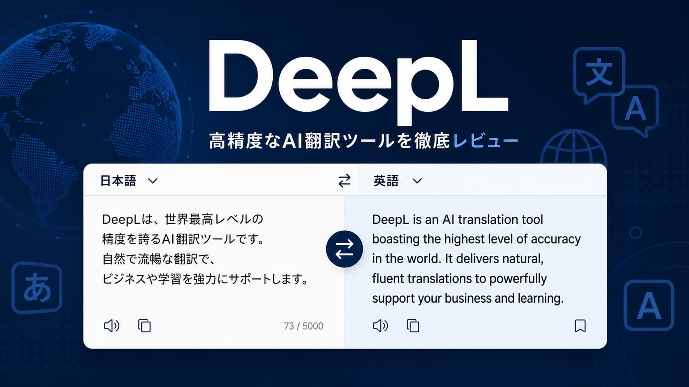

文章・ライティングDeepL レビュー｜Google翻訳を超えた精度の高い翻訳AIツール
2026年5月 更新
英語→日本語の翻訳精度において、DeepLはGoogle翻訳を大きく上回る自然な翻訳を実現しています。ただし対応言語数がGoogle翻訳より少ない点は注意が必要です。
DeepLとは？
DeepLはドイツ発のAI翻訳ツールです。独自のニューラル機械翻訳技術により、文脈を理解した自然な翻訳が可能です。
実際に使って良かった点
「英語の公式ドキュメントをDeepLに貼るだけで、ほぼそのまま使えるレベルの日本語になる。Google翻訳には戻れない。」
特に海外SaaSのヘルプページや英語記事を調べる際に威力を発揮します。一方で無料版は1回5,000文字の制限があり、長文を翻訳する場合はProプランが必要になります。
無料 vs Proプランの違い
| 機能 | 無料プラン | Proプラン（¥1,800/月〜） |
|---|---|---|
| テキスト翻訳 | ✅ 5,000文字まで | ✅ 無制限 |
| ファイル翻訳（Word・PDF） | ✅ 月3件まで | ✅ 無制限 |
| 翻訳履歴の保存 | ❌ | ✅ |
| APIアクセス | ❌ | ✅ |
| 用語集（専門用語登録） | 1件まで | ✅ 複数登録可 |
こんな人におすすめ
✅ 英語の記事・資料を読む人 ✅ 海外クライアントとやり取りする人 ✅ 翻訳の自然さにこだわる人 ⚠️ Google翻訳より少言語対応でも精度重視な人向け